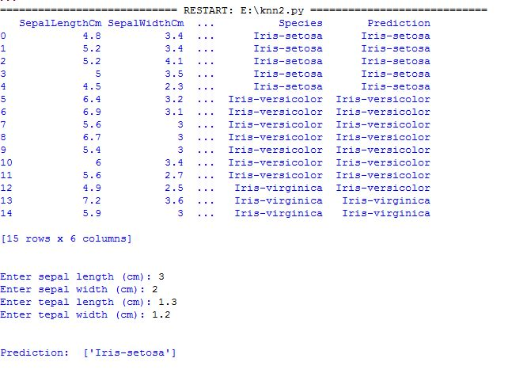

K-Nearest Neighbors¶
Konsep¶
K-nearest neighbors atau knn adalah algoritma yang berfungsi untuk melakukan klasifikasi suatu data berdasarkan data pembelajaran (train data sets), yang diambil dari k tetangga terdekatnya (nearest neighbors). Dengan k merupakan banyaknya tetangga terdekat.
Cara Kerja Algoritma K-Nearest Neighbors (KNN)¶
K-nearest neighbors melakukan klasifikasi dengan proyeksi data pembelajaran pada ruang berdimensi banyak. Ruang ini dibagi menjadi bagian-bagian yang merepresentasikan kriteria data pembelajaran. Setiap data pembelajaran direpresentasikan menjadi titik-titik c pada ruang dimensi banyak
Klasifikasi Terdekat (Nearest Neighbor Classification)¶
Data baru yang diklasifikasi selanjutnya diproyeksikan pada ruang dimensi banyak yang telah memuat titik-titik c data pembelajaran. Proses klasifikasi dilakukan dengan mencari titik c terdekat dari c-baru (nearest neighbor). Teknik pencarian tetangga terdekat yang umum dilakukan dengan menggunakan formula jarak euclidean*.* Berikut beberapa formula yang digunakan dalam algoritma knn.
-
Euclidean Distance¶
Jarak Euclidean adalah formula untuk mencari jarak antara 2 titik dalam ruang dua dimensi.
-
Hamming Distance¶
Jarak Hamming adalah cara mencari jarak antar 2 titik yang dihitung dengan panjang vektor biner yang dibentuk oleh dua titik tersebut dalam block kode biner.
-
Manhattan Distance¶
Manhattan Distance atau Taxicab Geometri adalah formula untuk mencari jarak d antar 2 vektor p,q pada ruang dimensi n
-
Minkowski Distance¶
Minkowski distance adalah formula pengukuran antar 2 titik pada ruang vektor normal yang merupakan hibridisasi yang mengeneralisasi euclidean distance dan mahattan distance.
Teknik pencarian tetangga terdekat disesuaikan dengan dimensi data, proyeksi, dan kemudahan implementasi oleh pengguna.
Banyaknya k Tetangga Terdekat¶
Untuk menggunakan algoritma k nearest neighbors, perlu ditentukan banyaknya k tetangga terdekat yang digunakan untuk melakukan klasifikasi data baru. Banyaknya k, sebaiknya merupakan angka ganjil, misalnya k = 1, 2, 3, dan seterusnya. Penentuan nilai k dipertimbangkan berdasarkan banyaknya data yang ada dan ukuran dimensi yang dibentuk oleh data. Semakin banyak data yang ada, angka k yang dipilih sebaiknya semakin rendah. Namun, semakin besar ukuran dimensi data, angka k yang dipilih sebaiknya semakin tinggi.
Algoritma K-Nearest Neighbors¶
- Tentukan k bilangan bulat positif berdasarkan ketersediaan data pembelajaran.
- Pilih tetangga terdekat dari data baru sebanyak k.
- Tentukan klasifikasi paling umum pada langkah (ii), dengan menggunakan frekuensi terbanyak.
- Keluaran klasifikasi dari data sampel baru.
Kelebihan dan Kekurangan dari Algoritma K-NN¶
Kelebihan
-
Sangat nonlinear
-
kNN merupakan salah satu algoritma (model) pembelajaran mesin yang bersifat nonparametrik. Pembahasan mengenai model parametrik dan model nonparametrik bisa menjadi artikel sendiri, namun secara singkat, definisi model nonparametrik adalah model yang tidak mengasumsikan apa-apa mengenai distribusi instance di dalam dataset. Model nonparametrik biasanya lebih sulit diinterpretasikan, namun salah satu kelebihannya adalah garis keputusan kelas yang dihasilkan model tersebut bisa jadi sangat fleksibel dan nonlinear.
-
Mudah dipahami dan diimplementasikan
Dari paparan yang diberikan dan penjelasan cara menghitung jarak dalam artikel ini, cukup jelas bahwa algoritma kNN mudah dipahami dan juga mudah dimplementasikan. Untuk mengklasifikasi instance x menggunakan kNN, kita cukup mendefinisikan fungsi untuk menghitung jarak antar-instance, menghitung jarak x dengan semua instance lainnya berdasarkan fungsi tersebut, dan menentukan kelas x sebagai kelas yang paling banyak muncul dalam k instance terdekat.
Kekurangan
- Perlu menunjukkan parameter K (jumlah tetangga terdekat)
- Tidak menangani nilai hilang (missing value) secara implisit
- Jika terdapat nilai hilang pada satu atau lebih variabel dari suatu instance, perhitungan jarak instance tersebut dengan instance lainnya menjadi tidak terdefinisi. Bagaimana coba, menghitung jarak dalam ruang 3-dimensi jika salah satu dimensi hilang? Karenanya, sebelum menerapkan kNN kerap dilakukan imputasi untuk mengisi nilai-nilai hilang yang ada pada dataset. Contoh teknik imputasi yang paling umum adalah mengisi nilai hilang pada suatu variabel dengan nilai rata-rata variabel tersebut (mean imputation).
- Sensitif terhadap data pencilan (outlier)
- Seperti yang telah dijelaskan Ali pada artikel sebelumnya, kNN bisa jadi sangat fleksibel jika k kecil. Fleksibilitas ini mengakibatkan kNN cenderung sensitif terhadap data pencilan, khususnya pencilan yang terletak di “tengah-tengah” kelas yang berbeda. Lebih jelasnya, perhatikan ilustrasi di bawah. Pada gambar kiri, seluruh instance bisa diklasifikasikan dengan benar ke dalam kelas biru dan jingga. Tetapi, ketika ditambahkan instance biru di antara instance jingga, beberapa instance jingga menjadi salah terklasifikasi.Perlu dipilih k yang tepat untuk mengurangi dampak data pencilan dalam kNN.
- Rentan terhadap dimensionalitas yang tinggi
- Berbagai permasalahan yang timbul dari tingginya dimensionalitas (baca: banyaknya variabel) menimpa sebagian besar algoritma pembelajaran mesin, dan kNN adalah salah satu algoritma yang paling rentan terhadap tingginya dimensionalitas. Hal ini karena semakin banyak dimensi, ruang yang bisa ditempati instance semakin besar, sehingga semakin besar pula kemungkinan bahwa nearest neighbour dari suatu instance sebetulnya sama sekali tidak “near“.
Implementasi Studi Kasus¶
pada metode Knn kali ini menggunakan dataset iris
import numpy as np # linear algebra import pandas as pd # data processing, CSV file I/O (e.g. pd.read_csv) from sklearn.neighbors import KNeighborsClassifier from sklearn import model_selection from sklearn.model_selection import train_test_split from sklearn.metrics import accuracy_score #memuat file csv df=pd.read_csv('Iris.csv') #Inisialisasi Gaussian Naive Bayes clf=KNeighborsClassifier(n_neighbors=3) # Dataset validasi dataset array = df.values X = array[:,1:5] Y = array[:,5] # Sepertiga data sebagai bagian dari set tes validation_size = 15 seed = 7 X_train, X_validation, Y_train, Y_validation = model_selection.train_test_split(X, Y, test_size=validation_size, random_state=seed) # Opsi tes dan metrik evaluasi scoring = 'accuracy' #Menyesuaikan set training clf.fit(X_train, Y_train) #Predicting untuk Set Tes pred_clf = clf.predict(X_validation) #Buat file prediksi dengan gabungan data asli dan prediksi #Membentuk kembali diperlukan untuk melakukan penggabungan pred_clf_df = pd.DataFrame(pred_clf.reshape(15,1)) #Ganti nama kolom untuk menunjukkan prediksi pred_clf_df.rename(columns={0:'Prediction'}, inplace=True) #membentuk kembali dataset uji X_validation_df = pd.DataFrame(X_validation.reshape(15 ,4)) #menggabungkan dua bingkai data panda di atas kolom untuk membuat dataset prediksi pred_outcome = pd.concat([X_validation_df, pred_clf_df], axis=1, join_axes=[X_validation_df.index]) pred_outcome.rename(columns = {0:'SepalLengthCm', 1:'SepalWidthCm', 2:'PetalLengthCm', 3:'PetalWidthCm'}, inplace=True) del df['Id'] #menggabungkan prediksi dengan dataset asli pred_comp = pd.merge(df,pred_outcome, on=['SepalLengthCm','SepalWidthCm','PetalLengthCm','PetalWidthCm']) #cetak 10 baris prediksi akhir print((pred_comp).head(15)) print ("\n") # make prediction sl = input('Enter sepal length (cm): ') sw = input('Enter sepal width (cm): ') tl = input('Enter tepal length (cm): ') tw = input('Enter tepal width (cm): ') dataClass = clf.predict([[sl,sw,tl,tw]]) print ("\n") print('Prediction: '), dataClass print ("\n")
hasil run program :

referensi
https://informatikalogi.com/algoritma-k-nn-k-nearest-neighbor/